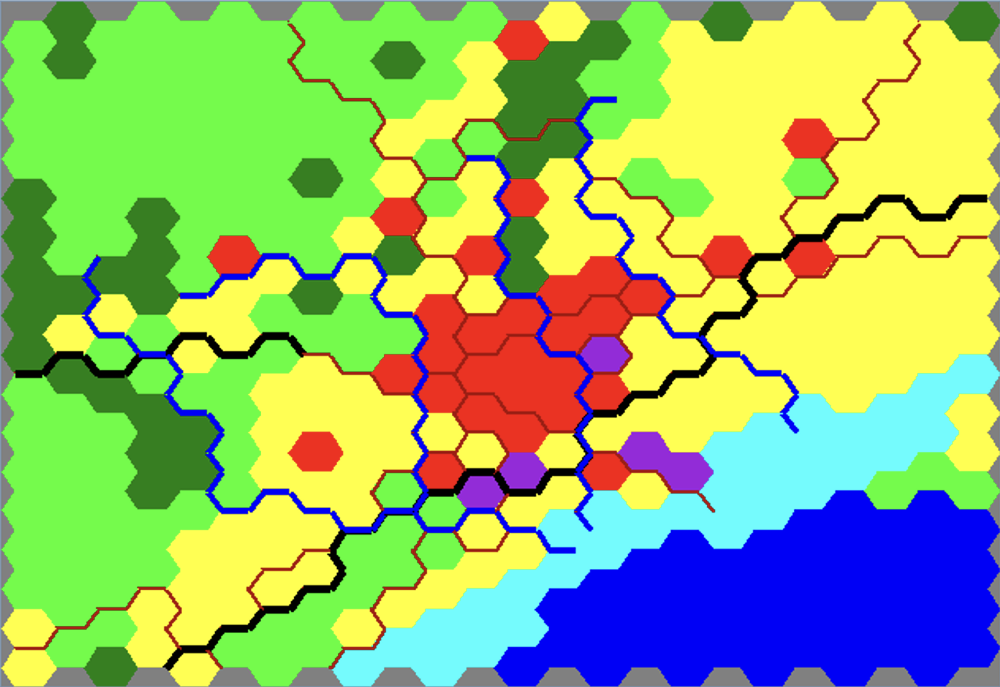
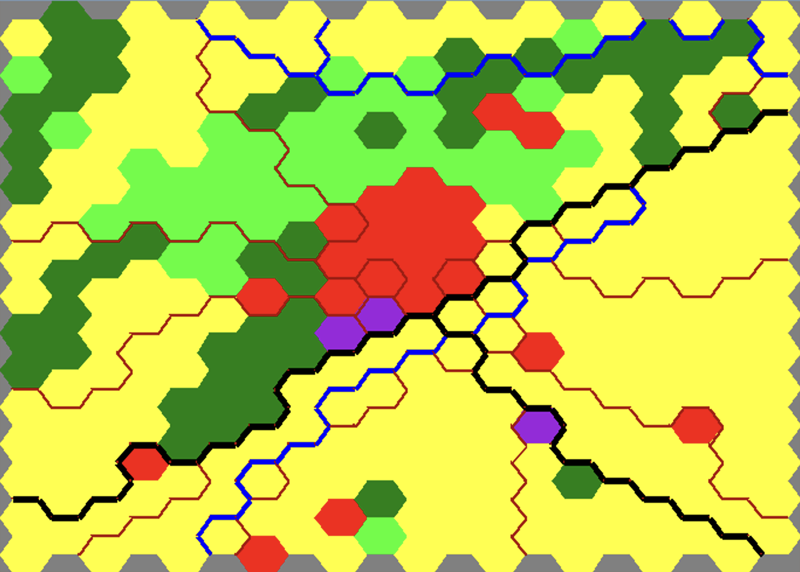
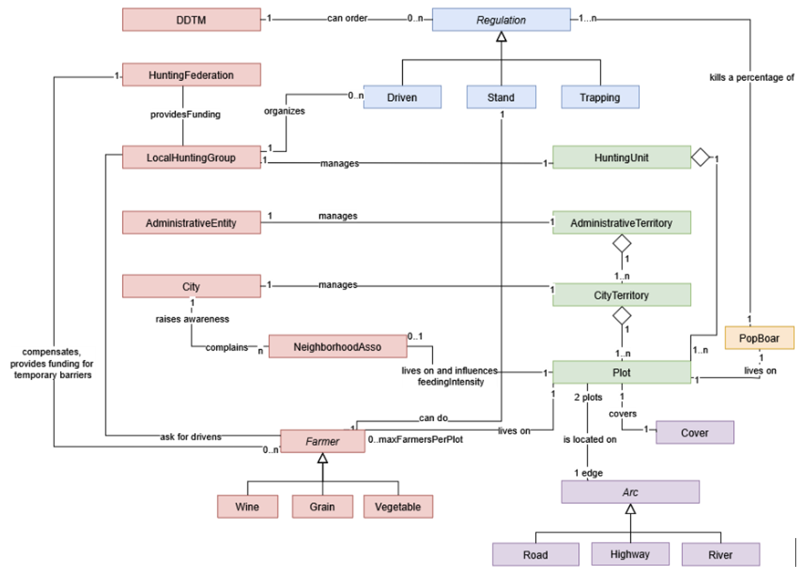

|
Boundaryboar Model
|
 |
 |
The model represents interactions between territorial elements (green), landscape-structuring elements (purple), wild boar populations (orange), human actors (red), and direct management actions (blue).

In this model, we have incorporated a variety of
levers that influence population dynamics and can be
adjusted to explore management scenarios: hunting
strategies, access to anthropogenic food sources in
urban areas (trash and direct feeding of animals), scrub
encroachment, supplementary feeding practices, and
targeted interventions. We have also included the option
to consider the issue of agricultural damage and ways to
protect crops.
Up to time step t = 28, the simulator operates retrospectively to reconstruct the current situation from historical dynamics. This corresponds to the period from 1990 to 2018. During this parameter calibration phase, the simulator serves as a tool for reflection and discussion among stakeholders to reconstruct a recent situation consistent with their on-the-ground knowledge.
After t=28, the simulator can be used in several ways: as a tool for reflecting on various possible management measures, as a tool for role-playing, and to explore different governance scenarios.